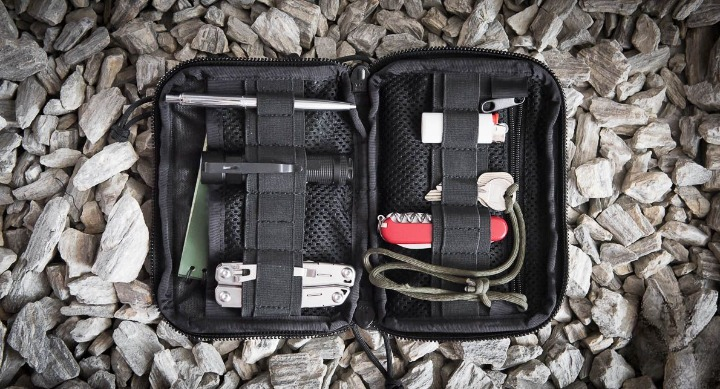

Buty: tu nie ma kompromisu. Buty muszą być górskie, porządne i najlepiej za kostkę. W wersji zimowej powinny być w pełni wodoodporne, a w wersji letniej, na prostsze szlaki dobrze polecamy sandały górskie z zakrytymi palcami. Adidaski naprawdę nadają się tylko na leniwy spacer doliną. Jeśli na jednej rzeczy nie warto oszczędzać, to na butach właśnie- dobre pozwolą przemierzyć długie kilometry, a źle dopasowane uprzykrzą każdą wędrówkę.
Plecak: Najlepiej górski, z klamrami na klatce piersiowej i w pasie - wtedy ramiączka plecaka tak nie ciążą. Na plecak warto mieć pokrowiec przeciwdeszczowy, który ochroni nasz dobytek w przypadku ulewy.
Skarpetki: żadne tam stópki, normalne wysokie skarpety. Najlepiej turystyczne, ale na początek dadzą radę również zwykłe wysokie (byle nie te do garnituru :P). Ważne, żeby dobrze kryły stopę i nie powodowały otarć. Pamiętajcie, że to co wygodne na godzinę, po całym dniu przechadzki może już wygodnym nie być.
Kurtka: w górach, nawet w słoneczny dzień pogoda może szybko się zmienić.
Na słońce: krem przeciwsłoneczny i czapka- oj, słońce potrafi mocno przygrzać w górach.
Apteczka: bandaże, coś do dezynfekcji, coś przeciwbólowego, folia NRC.
Jedzenie: tu warto wziąć pod uwagę, czy planujecie postój w schronisku czy może cały prowiant trzeba wziąć ze sobą.
Picie: koniecznie dużo wody- pamiętajcie, chodzenie po górach to zdecydowanie jest wysiłek fizyczny - warto pamiętać o piciu również w zimę, gdy brak pragnienia może być złudny.
Gotówka: tak, tak, bankomaty i płatności zbliżeniowe nie dotarły na pewne wysokości. Pomyślcie również o opłatach na busy.
Może się przydać

Scyzoryk/nóż: może być potrzeba przecięcia bandażu lub coś pokroić…
Kijki trekingowe: my lubimy chodzić z kijkami, naprawdę jakoś łatwiej się idzie. Szczególnie jeśli na plecach niesiecie duży plecak.
Chusta/komin: na szyję, głowę lub zmarzniętą rękę, taka wielofunkcyjna chusta naprawdę dobrze się spisuje.
Spodnie górskie: żeby była jasność - jakieś spodnie i tak trzeba wziąć, dla początkujących pewnie dresiki lub szorty dobrze się sprawdzą. Jeśli jednak chcieć wkręcać się w góry, spodnie górskie z szybko schnącego materiału to jest to!
Śpiwór: jeśli planujecie nocleg w schronisku lub pod chmurką. Pamiętajcie, że każde schronisko zawsze wpuści Was na noc, na tak zwany nocleg ,,na glebie”, ale będzie to dokładnie ,,na glebie”. Jeśli macie takie plany, warto wziąć również matę lub materac dmuchany.